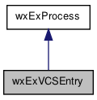

This class collects a single vcs. More...
#include <wx/extension/vcsentry.h>
Inheritance diagram for wxExVCSEntry:

Public Member Functions | |
| wxExVCSEntry () | |
| Default constructor. More... | |
| wxExVCSEntry (const wxXmlNode *node) | |
| Constructor using xml node. | |
| bool | AdminDirIsTopLevel () const |
| Returns true if admin dir is only at top level. | |
| int | BuildMenu (int base_id, wxMenu *menu, bool is_popup=true) const |
| Builds a menu from vcs commands. More... | |
| bool | Execute (const wxString &args, const wxExLexer &lexer, const wxString &wd=wxEmptyString) |
| Executes the current vcs command. More... | |
| const wxString & | GetAdminDir () const |
| Gets the administrative directory. | |
| const wxExVCSCommand & | GetCommand () const |
| Gets the current vcs command. | |
| const size_t | GetCommands () const |
| Gets the number of vcs commands. | |
| const wxString | GetFlags () const |
| Gets the flags used to run the command. | |
| const wxString & | GetName () const |
| Gets the name. | |
| bool | SetCommand (int menu_id) |
| Sets the current vcs command. More... | |
| int | ShowDialog (wxWindow *parent, const wxString &caption, bool add_folder) const |
| Shows a dialog allowing you to run or cancel the current vcs command. More... | |
| virtual void | ShowOutput (const wxString &caption=wxEmptyString) const |
| Overriden from base class. | |
 Public Member Functions inherited from wxExProcess Public Member Functions inherited from wxExProcess | |
| wxExProcess () | |
| Default constructor. | |
| ~wxExProcess () | |
| Destructor. | |
| wxExProcess (const wxExProcess &process) | |
| Copy constructor. | |
| wxExProcess & | operator= (const wxExProcess &p) |
| Assignment operator. | |
| bool | Command (int id, const wxString &command) |
| Handles shell commands. | |
| bool | Execute (const wxString &command=wxEmptyString, int flags=wxEXEC_ASYNC, const wxString &wd=wxEmptyString) |
| Executes the process. More... | |
| bool | GetError () const |
| Returns true if the command could not be executed. | |
| const wxString & | GetOutput () const |
| Gets the output from Execute (only filled for wxEXEC_SYNC). | |
| bool | HasStdError () const |
| Returns true when the command executed resulted in stderr errors. | |
| bool | IsRunning () const |
| Returns true if this process is running. | |
| bool | IsSelected () const |
| Returns true if a process command is selected. | |
| wxKillError | Kill (wxSignal sig=wxSIGKILL) |
| Kills the process (sends specified signal if process still running). | |
Additional Inherited Members | |
| Static Public Member Functions inherited from wxExProcess | |
| static int | ConfigDialog (wxWindow *parent, const wxString &title=_("Select Process"), bool modal=true) |
| Shows a config dialog, allowing you to set the command and folder. More... | |
| static wxExSTCShell * | GetShell () |
| Returns the shell, for input to the process. More... | |
| static wxExSTC * | GetSTC () |
| Returns the STC component from the dialog (might be NULL if dialog is NULL). More... | |
| Protected Member Functions inherited from wxExProcess | |
| virtual void | OnTerminate (int pid, int status) |
| Overriden from wxProcess. | |
| void | OnTimer (wxTimerEvent &event) |
| Handles timer events. | |
Detailed Description
This class collects a single vcs.
Constructor & Destructor Documentation
| wxExVCSEntry::wxExVCSEntry | ( | ) |
Default constructor.
Adds empty vcs command with id 0.
Member Function Documentation
| int wxExVCSEntry::BuildMenu | ( | int | base_id, |
| wxMenu * | menu, | ||
| bool | is_popup = true |
||
| ) | const |
Builds a menu from vcs commands.
Returns (total) number of items in menu.
- Parameters
-
base_id menu id to be added to the vcs command menu menu to be built is_popup default assumes this is a popup menu
| bool wxExVCSEntry::Execute | ( | const wxString & | args, |
| const wxExLexer & | lexer, | ||
| const wxString & | wd = wxEmptyString |
||
| ) |
Executes the current vcs command.
Might ask for vcs binary if it is not yet known. Return code is code from process Execute, and also can be false if dialog for vcs bin was cancelled.
| bool wxExVCSEntry::SetCommand | ( | int | menu_id | ) |
Sets the current vcs command.
Returns true if command was set.
- Parameters
-
menu_id Should be in between ID_EDIT_VCS_LOWEST and ID_EDIT_VCS_HIGHEST or in between ID_VCS_LOWEST and ID_VCS_HIGHEST
| int wxExVCSEntry::ShowDialog | ( | wxWindow * | parent, |
| const wxString & | caption, | ||
| bool | add_folder | ||
| ) | const |
Shows a dialog allowing you to run or cancel the current vcs command.
Returns result from calling ShowModal.